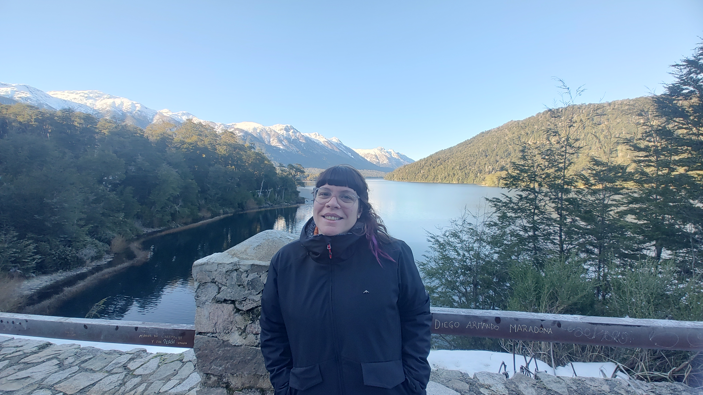

Un breve resumen de mi vida profesional ❤️
Nací en 1985 en Buenos Aires, tengo 38 años y vivo en CABA. Trabajo en desarrollo desde 2017, en el año 2018 me gradué de la tecnicatura en desarrollo web en la Escuela Da Vinci.
Inicié como desarrolladora en una consultora que me enseñó a lidiar con muchos proyectos al mismo tiempo, luego trabajé en Emergencias, formando parte de un gran equipo especialzado en un proyecto marca blanca. En pandemia comencé a trabaja en Compra Gamer, una empresa nacional de insumos tecnológicos. En esta empresa, inicié como la única desarrolladora Frontend y fui creciendo hasta quedar como Head del equipo de desarrollo, equipo que tuve el placer de buscar, formar y ver crecer.
El año pasado hice un gran cambio en mi vida y arranqué a trabajar en Mercado Libre como Technical Leader, dejando un poco de lado la gestión de equipos y enfocandome en perfeccionarme tecnicamente en diferentes tecnologías del Front.
Por esta razón es la que empecé a estudiar la licenciatura, quiero expandir mis bases académicas ya que la tecnicatura que cursé fue muy práctica y no me dio este tipo de conocimientos, también busco mejorar en la parte de gestión, organización y comunicación para poder formar equipos efectivos y duraderos.